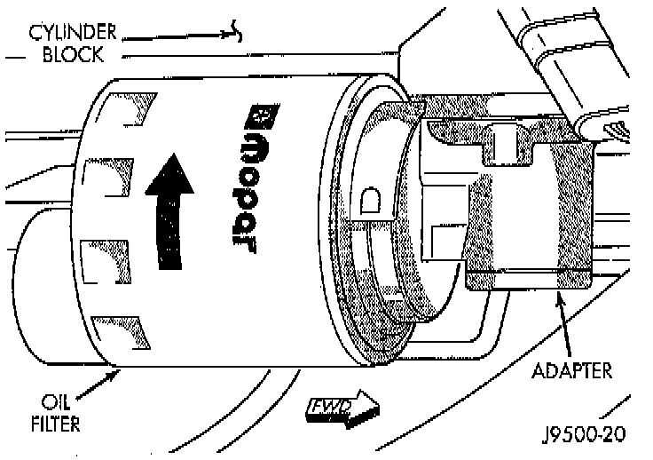

Oil Filter: Service and Repair
REMOVAL1. Position a drain pan under the oil filter.
2. Using a suitable oil filter wrench loosen filter.
3. Rotate the oil filter counterclockwise to remove it from the cylinder block oil filter boss.
4. When filter separates from adapter nipple, tip gasket end upward to minimize oil spill. Remove filter from vehicle.

5. With a wiping cloth, clean the gasket sealing surface of oil and grime.
INSTALLATION
1. Lightly lubricate oil filter gasket with engine oil or chassis grease.
2. Thread filter onto adapter nipple. When gasket makes contact with sealing surface, hand tighten filter one full turn, do not over tighten.
3. Add oil, verify crankcase oil level and start engine. Inspect for oil leaks.
NOTE: Care should be exercised when disposing of used engine oil after it has been drained from a vehicle engine.